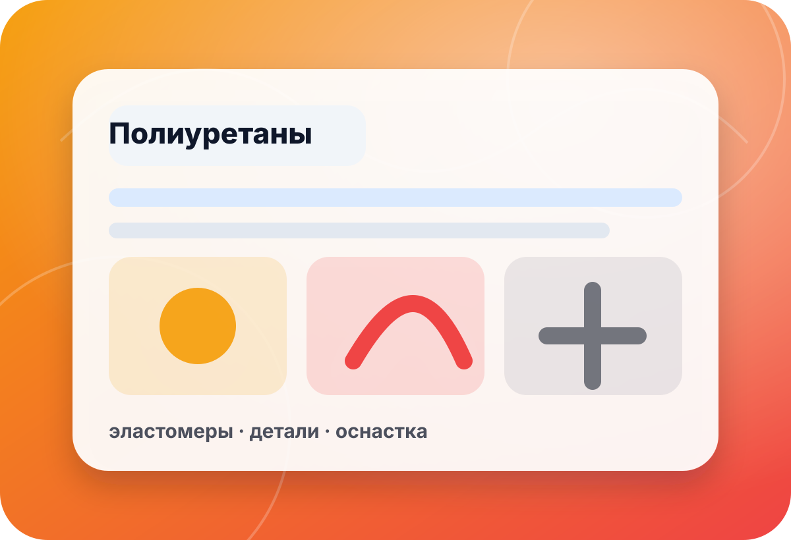

категория · адгезивы
Клеевой материал под поверхность, нагрузку и процесс
Адгезив выбирают не по названию, а по паре материалов, подготовке поверхности, нагрузке, условиям эксплуатации и времени работы. В preview не публикуем неподтверждённые цены, наличие и точные характеристики.
- пары
- материалы
- нагрузка
- режим
- поверхн.
- подготовка
- время
- процесс

быстрый выбор
Начните с пары склеиваемых материалов
Металл, пластик, резина, силикон, окрашенная поверхность или пористое основание требуют разной подготовки и теста.
Силикон и эластичные материалыДля таких задач особенно важны совместимость, чистота поверхности и тестовый образец.Смотреть пример →Прочная сборкаКогда важны нагрузка, жёсткость соединения и контроль времени работы.Смотреть пример →Нестандартная пара материаловЛучше описать поверхности, нагрузку и условия эксплуатации до покупки.Задать вопрос →
каталог адгезивов
Популярные направления
Ссылки ведут на существующие страницы. Подтверждайте применение по инструкции и тестовой пробе.
 ◌
◌Sil-Poxy
Для задач с силиконовыми и эластичными материалами, где важна совместимость.
- очистка
- тест
- эластичность
⬢EA-40
Клеевая система для прочной сборки, требующая соблюдения инструкции.
- пара материалов
- нагрузка
- время работы
▣Metalset
Для задач, связанных с металлом и жёсткой сборкой, после проверки поверхности.
- металл
- подготовка
- фиксация

◎Ure-Bond
Для задач с полиуретановыми материалами и совместимыми поверхностями.
- полиуретан
- праймер
- тест
✦Быстрые клеи
Когда важна скорость фиксации, но нужно учитывать материал и хрупкость соединения.
- скорость
- зазор
- нагрузка
✚Герметики и подготовка
Иногда задача решается не клеем, а подготовкой, герметизацией или разделителем.
- поверхность
- герметизация
- совместимость
чек-лист перед применением
Что влияет на прочность соединения
Пара материалов
Склейка металл-металл, силикон-силикон или пластик-резина — разные задачи.
Уточнить:материал 1 · материал 2 · покрытие · пористостьПодготовка поверхности
Очистка, обезжиривание, шероховатость и праймер часто важнее выбора названия.
Уточнить:чистота · праймер · шлифовка · влажностьНагрузка и среда
Сдвиг, отрыв, вибрация, температура и контакт с химией меняют требования.
Уточнить:нагрузка · температура · вода · вибрацияТестовая проба
Перед рабочим изделием лучше проверить адгезию, внешний вид и время фиксации.
Уточнить:образец · время · фиксация · финишмини-бриф
Опишите материалы — поможем выбрать адгезив
Форма в preview не отправляет данные на сервер. Для реального запуска подключается CRM/почта/мессенджер после согласования.